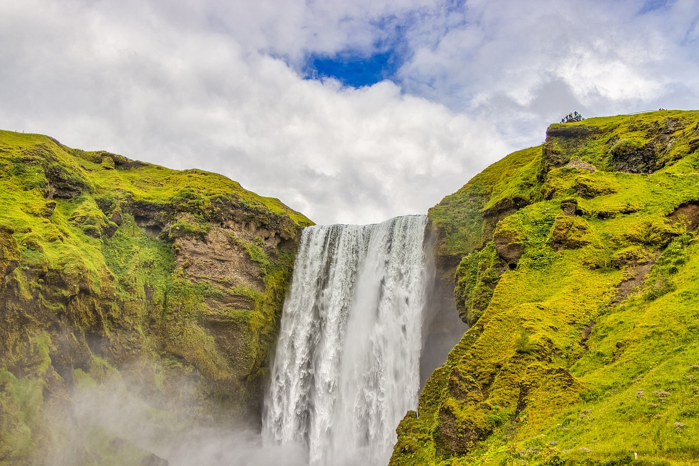
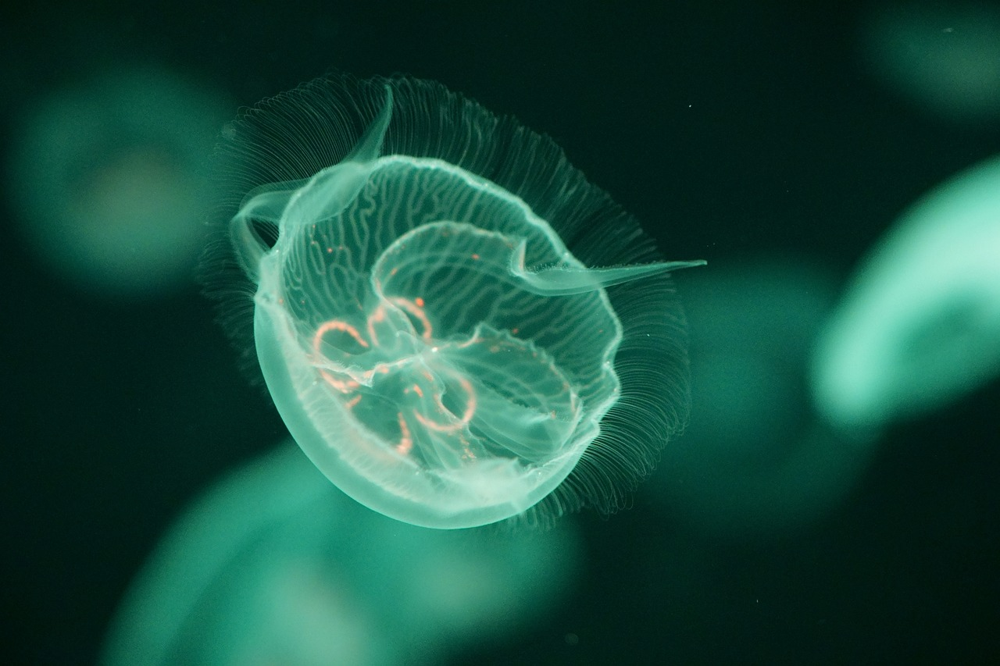
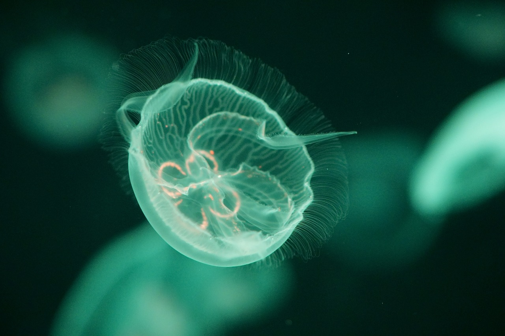

L’association « les amis de l’eau » est une association destinée à sensibiliser les personnes à cette denrée souvent maltraitée : l’eau. Elle est souvent considérée comme un acquis dans les pays occidentaux. Elle est très appréciée et non omniprésente dans les pays dits en voie de développement. Ne dit-on pas qu’il y a une mémoire de l’eau ? Cette eau non respectée se venge t-elle des maltraitances qu’on lui fait subir ? L’association se propose d’initier les personnes qui le souhaitent à rechercher de l’eau, à calculer son débit, cf voir nos manifestations en page manifestation. L’histoire de l’eau est également contée par le très célèbre M DePluie.
-
Présentation de l'association
-
Histoire
Sans eau, pas de vie. L’être humain est constitué de 60 à 70% d’eau. Elle est donc indispensable à toute vie. La recherche de l’eau a de tout temps été indispensable. Elle permet de trouver de nouveaux puits pour irriguer les champs, pour abreuver les animaux ou tout simplement pour se désaltérer. Fontaine, rivières, chutes d’eau, lacs, océans, tous ces termes n’ont qu’un seul but définir un endroit où s’étend de l’eau. Elle est présente partout mais pas pour tout le monde. Du désert brûlant du Sahara aux neiges de l’Everest, en passant par les plaines de la Russie, l’eau circule soit profondément, soit en surface. Les hommes essaient de la dompter en construisant des barrages ou en la détournant. La nature reprend ses droits rapidement.
-
Généralités
L’eau est un composant omniprésent dans la nature. Elle tombe sous la forme de pluie, descend dans la rivière. La rivière se jette dans le fleuve qui rejoint lui-même l’océan. L’évaporation de l’océan entraine les nuages qui transportent la pluie. La boucle est bouclée. Toute eau soit-elle, elle peut être calme comme furieuse. Dans l’océan, tout un écosystème survit, des krills aux baleines en passant par les poissons. L’eau est présente sur la Terre sous ses trois formes : solide, liquide et gaz. Les icebergs, bien connus du Titanic sont situés aux deux pôles nord et sud. Les océans couvrent une bonne partie de la planète. La vapeur d’eau circule en permanence dans les nuages.
-
images
 
